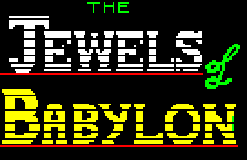

 |
Routines |
| Prev: C041 | Up: Map | Next: C17D |
|
Used by the routine at Handler_UserInput.
Parses and tokenises the user's command input when they press ENTER. The input is broken down into individual words, each word is looked up in the vocabulary table, and unrecognised words are reported to the player.
|
||||||||||
| UserInput_Enter | C058 | LD (HL),A | Write 0D to the command buffer at the current position for use as a termination character. | |||||||
|
Force a newline to be "printed" to the screen.
|
||||||||||
| C059 | CALL SwitchNormalScreenOutput | Call SwitchNormalScreenOutput. | ||||||||
| C05C | CALL PrintCharacter | Call PrintCharacter. | ||||||||
|
Initialise the word token buffer. This buffer will store up to 0A vocabulary tokens (one per word in the command). Each token is the index of the word in the vocabulary table.
|
||||||||||
| C05F | LD HL,$BD66 | HL=UserInput_Token_1. | ||||||||
| C062 | LD A,$FF | A=FF. | ||||||||
| C064 | LD B,$0A | Set a counter in B for the size of the word token buffer (0A bytes). | ||||||||
|
Fill the word token buffer with FF (the terminator value) to mark all slots as empty.
|
||||||||||
| EmptyWordTokenBuffer_Loop | C066 | LD (HL),A | Write A to *HL. | |||||||
| C067 | INC HL | Increment HL by one. | ||||||||
| C068 | DJNZ EmptyWordTokenBuffer_Loop | Decrease the word token buffer counter by one and loop back to EmptyWordTokenBuffer_Loop until the whole buffer is cleared. | ||||||||
| C06A | LD HL,$BD34 | HL=CommandBuffer. | ||||||||
| C06D | LD C,$0A | C=0A. | ||||||||
|
Begin parsing the command. Extract each word from the input, look it up in the vocabulary, and store its token. Words are separated by spaces or commas, and the word "The" is automatically ignored.
|
||||||||||
| UserInputParser_Loop | C06F | LD DE,$BD71 | DE=BD71. | |||||||
| C072 | LD B,$04 | B=04. | ||||||||
|
Clear the word buffer by writing ASCII "SPACE" (20) 04 times.
|
||||||||||
| C074 | LD A,$20 | Load ASCII "SPACE" (20) into A. | ||||||||
| ClearWordBuffer_Loop | C076 | LD (DE),A | Write the ASCII space to *DE. | |||||||
| C077 | INC DE | Increment DE by one. | ||||||||
| C078 | DJNZ ClearWordBuffer_Loop | Decrease counter by one and loop back to ClearWordBuffer_Loop until counter is zero. | ||||||||
| C07A | XOR A | A=00. | ||||||||
| C07B | OR C | A|=C. | ||||||||
| C07C | JP Z,CheckIfEmptyInput | Jump to CheckIfEmptyInput if DE is equal to C. | ||||||||
| C07F | LD A,(HL) | Jump to CheckIfEmptyInput if *HL is equal to 0D. | ||||||||
| C080 | CP $0D | |||||||||
| C082 | JP Z,CheckIfEmptyInput | |||||||||
| C085 | LD B,$04 | B=04. | ||||||||
| C087 | LD DE,$BD71 | DE=BD71. | ||||||||
|
Extract the next word from the command buffer. Copy up to 04 characters (the maximum word length) into the word buffer, stopping at a space, comma, or end of input.
|
||||||||||
| CopyWord_Loop | C08A | LD A,(HL) | Read the character from *HL and store it in A. | |||||||
| C08B | CP $0D | Jump to CheckIfThe if this character is a newline (0D end of input). | ||||||||
| C08D | JR Z,CheckIfThe | |||||||||
| C08F | CP $20 | Jump to SkipDelimiters_Loop if the character is either an ASCII "SPACE" (20) or an ASCII comma (2C). | ||||||||
| C091 | JR Z,SkipDelimiters_Loop | |||||||||
| C093 | CP $2C | |||||||||
| C095 | JR Z,SkipDelimiters_Loop | |||||||||
| C097 | LD (DE),A | Write this character to the word buffer at *DE. | ||||||||
| C098 | INC HL | Move to the next character in the command buffer. | ||||||||
| C099 | INC DE | Move to the next position in the word buffer. | ||||||||
| C09A | DJNZ CopyWord_Loop | Decrease counter by one and loop back to CopyWord_Loop until counter is zero. | ||||||||
|
If the word was longer than 04 characters, skip over the remaining characters until a delimiter (space, comma, or end of input) is found.
|
||||||||||
| SkipRemainingWord_Loop | C09C | LD A,(HL) | Read the character from *HL and store it in A. | |||||||
| C09D | CP $0D | Jump to CheckIfThe if this character is a newline (0D). | ||||||||
| C09F | JR Z,CheckIfThe | |||||||||
| C0A1 | CP $20 | Jump to SkipDelimiters_Loop if the character is an ASCII "SPACE" (20). | ||||||||
| C0A3 | JR Z,SkipDelimiters_Loop | |||||||||
| C0A5 | CP $2C | Jump to SkipDelimiters_Loop if the character is an ASCII comma (2C). | ||||||||
| C0A7 | JR Z,SkipDelimiters_Loop | |||||||||
| C0A9 | INC HL | Move to the next character in the command buffer. | ||||||||
| C0AA | JR SkipRemainingWord_Loop | Jump to SkipRemainingWord_Loop. | ||||||||
|
Skip over any consecutive spaces or commas to find the start of the next word.
|
||||||||||
| SkipDelimiters_Loop | C0AC | INC HL | Move to the next character in the command buffer. | |||||||
| C0AD | LD A,(HL) | Read the character from *HL and store it in A. | ||||||||
| C0AE | CP $20 | Jump to SkipDelimiters_Loop if the character is an ASCII "SPACE" (20). | ||||||||
| C0B0 | JR Z,SkipDelimiters_Loop | |||||||||
| C0B2 | CP $2C | Jump to SkipDelimiters_Loop if the character is an ASCII comma (2C). | ||||||||
| C0B4 | JR Z,SkipDelimiters_Loop | |||||||||
|
Check if the extracted word is "The". If it is, ignore it and continue with the next word (adventure games typically ignore articles like "the", "a", "an").
|
||||||||||
| CheckIfThe | C0B6 | PUSH HL | Stash HL, DE and BC on the stack. | |||||||
| C0B7 | PUSH DE | |||||||||
| C0B8 | PUSH BC | |||||||||
| C0B9 | LD HL,$BD8C | HL=Messaging_The. | ||||||||
| C0BC | LD DE,$BD71 | DE=BD71. | ||||||||
| C0BF | LD B,$04 | B=04. | ||||||||
| CompareWord_Loop | C0C1 | LD A,(DE) | Jump to AfterCompareWord if the characters don't match (the word is not "The"). | |||||||
| C0C2 | CP (HL) | |||||||||
| C0C3 | JR NZ,AfterCompareWord | |||||||||
| C0C5 | INC DE | Move to the next character in the extracted word. | ||||||||
| C0C6 | INC HL | Move to the next character in "The". | ||||||||
| C0C7 | DJNZ CompareWord_Loop | Decrease counter by one and loop back to CompareWord_Loop until all 04 characters have been compared. | ||||||||
| AfterCompareWord | C0C9 | POP BC | Restore BC, DE and HL from the stack. | |||||||
| C0CA | POP DE | |||||||||
| C0CB | POP HL | |||||||||
| C0CC | JR Z,UserInputParser_Loop | Jump to UserInputParser_Loop if the words matched (this was "The", so skip it and process the next word). | ||||||||
| C0CE | DEC C | Decrease C by one. | ||||||||
| C0CF | LD ($BD7D),HL | Write HL to *TempStore_TablePointer. | ||||||||
| C0D2 | LD ($BD7F),DE | Write DE to *TempStore_TableIndex. | ||||||||
| C0D6 | LD ($BD81),BC | Write BC to *TempStore_WordCount. | ||||||||
|
Look up the word in the vocabulary table. The vocabulary contains all recognised verbs, nouns, and other words the game understands. Each entry can have synonyms separated by commas.
|
||||||||||
| C0DA | LD HL,($BD0C) | HL=*Pointer_Vocabulary. | ||||||||
| C0DD | LD C,$00 | C=00. | ||||||||
| VocabularyLookup_Loop | C0DF | LD A,(HL) | Jump to ProcessUnrecognisedWords if *HL is equal to FF (end of vocabulary table). | |||||||
| C0E0 | CP $FF | |||||||||
| C0E2 | JR Z,ProcessUnrecognisedWords | |||||||||
| CompareVocabularyWord | C0E4 | LD DE,$BD71 | DE=BD71. | |||||||
| C0E7 | LD B,$04 | B=04. | ||||||||
| CompareVocabularyWord_Loop | C0E9 | LD A,(DE) | Jump to VocabularyWordNoMatch if the characters don't match (this vocabulary entry doesn't match the word). | |||||||
| C0EA | CP (HL) | |||||||||
| C0EB | JR NZ,VocabularyWordNoMatch | |||||||||
| C0ED | INC DE | Move to the next character in the extracted word. | ||||||||
| C0EE | INC HL | Move to the next character in the vocabulary entry. | ||||||||
| C0EF | DJNZ CompareVocabularyWord_Loop | Decrease counter by one and loop back to CompareVocabularyWord_Loop until all 04 characters have been compared. | ||||||||
|
Word matched in vocabulary! Calculate which slot in the token buffer to use (based on how many words have been processed so far) and store the vocabulary index as the token.
|
||||||||||
| C0F1 | LD HL,$BD81 | HL=TempStore_WordCount. | ||||||||
| C0F4 | LD A,$09 | A=09. | ||||||||
| C0F6 | SUB (HL) | Calculate the token buffer slot index: A-=*HL. | ||||||||
| C0F7 | LD D,$00 | D=00. | ||||||||
| C0F9 | LD E,A | E=A. | ||||||||
| C0FA | LD HL,$BD66 | Calculate the address of the token buffer slot: HL=UserInput_Token_1+DE. | ||||||||
| C0FD | ADD HL,DE | |||||||||
| C0FE | LD (HL),C | Store the vocabulary index (C) in the token buffer slot. | ||||||||
| C0FF | LD HL,($BD7D) | Restore the command buffer position from *TempStore_TablePointer. | ||||||||
| C102 | LD DE,($BD7F) | Restore the word buffer position from *TempStore_TableIndex. | ||||||||
| C106 | LD BC,($BD81) | Restore the word counter from *TempStore_WordCount. | ||||||||
| C10A | JP UserInputParser_Loop | Jump to UserInputParser_Loop. | ||||||||
|
Word didn't match this vocabulary entry. Check if there's a synonym (indicated by a comma). If found, try matching against the synonym instead.
|
||||||||||
| VocabularyWordNoMatch | C10D | LD E,B | E=B. | |||||||
| C10E | LD D,$00 | D=00. | ||||||||
| C110 | ADD HL,DE | Move the vocabulary pointer past the word that didn't match: HL+=DE. | ||||||||
| C111 | LD A,(HL) | Read the character at this position and store it in A. | ||||||||
| C112 | CP $2C | Jump to VocabularyNextEntry if this character is not a comma (2C meaning no synonym exists). | ||||||||
| C114 | JR NZ,VocabularyNextEntry | |||||||||
| C116 | INC HL | Move past the comma to the synonym. | ||||||||
| C117 | JR CompareVocabularyWord | Jump to CompareVocabularyWord to try matching the synonym. | ||||||||
| VocabularyNextEntry | C119 | INC C | Increment C by one. | |||||||
| C11A | JR VocabularyLookup_Loop | Jump to VocabularyLookup_Loop to check the next vocabulary entry. | ||||||||
|
All recognised words have been tokenised. Now check if there are any unrecognised words remaining in the input. If so, display an error message to the player showing which word(s) weren't understood.
|
||||||||||
| ProcessUnrecognisedWords | C11C | LD HL,($BD7D) | HL=*TempStore_TablePointer. | |||||||
| C11F | LD DE,($BD7F) | DE=*TempStore_TableIndex. | ||||||||
| C123 | LD BC,($BD81) | BC=*TempStore_WordCount. | ||||||||
| C127 | LD A,$0A | C=0A-C. | ||||||||
| C129 | SUB C | |||||||||
| C12A | LD C,A | |||||||||
| C12B | LD HL,$BD34 | HL=CommandBuffer. | ||||||||
| ProcessUnrecognisedWords_Loop | C12E | DEC C | Decrease C by one. | |||||||
| C12F | JR Z,PrintUnrecognisedWord | Jump to PrintUnrecognisedWord if C is equal to 0A (no unrecognised words found). | ||||||||
| FindUnrecognisedWord_Loop | C131 | LD A,(HL) | Read the character from *HL and store it in A. | |||||||
| C132 | CP $20 | Jump to SkipDelimiters_Loop2 if the character is an ASCII "SPACE" (20). | ||||||||
| C134 | JR Z,SkipDelimiters_Loop2 | |||||||||
| C136 | CP $2C | Jump to SkipDelimiters_Loop2 if the character is an ASCII comma (2C). | ||||||||
| C138 | JR Z,SkipDelimiters_Loop2 | |||||||||
| C13A | INC HL | Move to the next character in the command buffer. | ||||||||
| C13B | JR FindUnrecognisedWord_Loop | Jump to FindUnrecognisedWord_Loop. | ||||||||
| SkipDelimiters_Loop2 | C13D | INC HL | Move to the next character in the command buffer. | |||||||
| C13E | LD A,(HL) | Read the character from *HL and store it in A. | ||||||||
| C13F | CP $20 | Jump to SkipDelimiters_Loop2 if the character is an ASCII "SPACE" (20). | ||||||||
| C141 | JR Z,SkipDelimiters_Loop2 | |||||||||
| C143 | CP $2C | Jump to SkipDelimiters_Loop2 if the character is an ASCII comma (2C). | ||||||||
| C145 | JR Z,SkipDelimiters_Loop2 | |||||||||
| C147 | JR ProcessUnrecognisedWords_Loop | Jump to ProcessUnrecognisedWords_Loop. | ||||||||
|
Print the unrecognised word(s) in quotes.
|
||||||||||
| PrintUnrecognisedWord | C149 | PUSH HL | Stash HL on the stack. | |||||||
|
Print "I don't know the word:-".
|
||||||||||
| C14A | LD HL,$BDA5 | HL=Messaging_IDontKnowTheWord. | ||||||||
| C14D | CALL PrintStringAndNewline | Call PrintStringAndNewline. | ||||||||
| C150 | POP HL | Restore HL from the stack. | ||||||||
| C151 | LD A,$22 | Print a double quote character: """. |
||||||||
| C153 | CALL PrintCharacter | |||||||||
| PrintUnrecognisedWord_Loop | C156 | LD A,(HL) | Read the character from *HL and store it in A. | |||||||
| C157 | CP $21 | Jump to PrintUnrecognisedWord_End if this character is less than 21 (a control character, indicating end of word). | ||||||||
| C159 | JR C,PrintUnrecognisedWord_End | |||||||||
| C15B | INC HL | Move to the next character in the command buffer. | ||||||||
| C15C | CALL PrintCharacter | Call PrintCharacter. | ||||||||
| C15F | JR PrintUnrecognisedWord_Loop | Jump to PrintUnrecognisedWord_Loop. | ||||||||
| PrintUnrecognisedWord_End | C161 | LD A,$22 | Print a double quote character: """. |
|||||||
| C163 | CALL PrintCharacter | |||||||||
|
Print ".".
|
||||||||||
| C166 | LD HL,$BF29 | HL=Messaging_FullStop. | ||||||||
| C169 | CALL PrintStringAndNewline | Call PrintStringAndNewline. | ||||||||
| C16C | JR ReturnToInputHandler | Jump to ReturnToInputHandler. | ||||||||
|
Check if the input was empty (no words were tokenised). If tokens were found, return to allow the command to be processed. Otherwise, display "I Don't Understand".
|
||||||||||
| CheckIfEmptyInput | C16E | LD A,($BD66) | Return if *UserInput_Token_1 is not equal to FF (input was not empty). | |||||||
| C171 | CP $FF | |||||||||
| C173 | RET NZ | |||||||||
|
Print "I don't understand.".
|
||||||||||
| C174 | LD HL,$BD91 | HL=Messaging_IDontUnderstand. | ||||||||
| C177 | CALL PrintStringAndNewline | Call PrintStringAndNewline. | ||||||||
| ReturnToInputHandler | C17A | JP Handler_UserInput | Jump to Handler_UserInput to wait for the next command input. | |||||||
| Prev: C041 | Up: Map | Next: C17D |